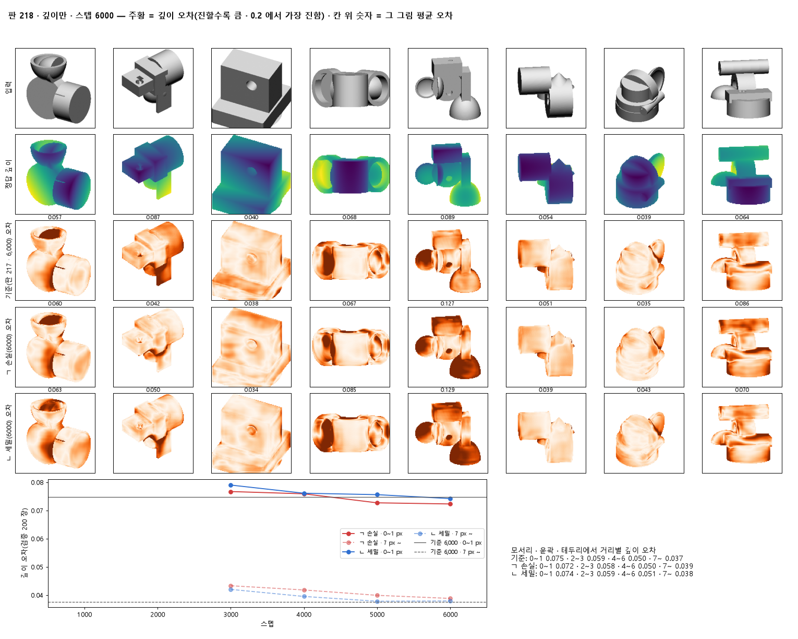
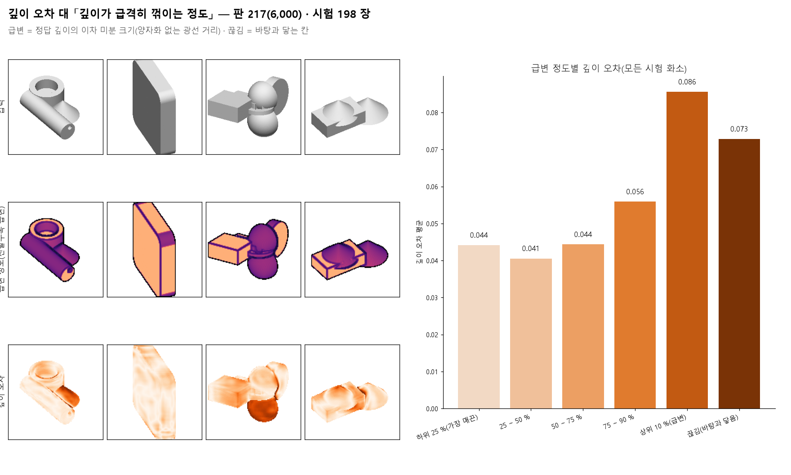

m1_tr0218_h000_깊이모서리
모서리 근처 깊이가 뭉개지는 까닭은 손실(같은 무게)인가, 디코더의 세밀함인가?
판정 · 다(둘 다 아님) — 시험 깊이 0~1 px 기준 0.0703 · 손실 0.0702(+0.1 %) · 세밀 0.0719(−2.3 %) · 깊이SSI 둘 다 기준보다 나쁨 · 세밀은 선 조금 오름(모서리 0.959 · 원호 0.910) → 깊이 끝은 선으로 세우고 tr220 · 5,000 스텝에서 메모리 부족으로 멈췄다 이어 감
결정 표(돌리기 전에 정함)
- 만약 손실 · 세밀 둘 다 시험 0 ~ 1 px 깊이 오차를 기준보다 15 % 넘게 줄이고 모서리F · 윤곽F 를 0.01 안으로 지키고 깊이SSI 가 기준 이하
다음 둘 다 맞음 → 둘을 합친 판 - 만약 하나만 그렇다
다음 그 쪽이 까닭 → 그것을 바탕에 넣고 tr220(실물 사진) - 만약 둘 다 5 % 안
다음 둘 다 아님 → 깊이 끝은 합칠 때 선으로 세우기로 하고 tr220 - 만약 그 사이
다음 씨앗 둘 더(흔들림인지 가름)
분석
한 줄로
물음: tr217 에서 깊이 오차가 모서리 · 윤곽 · 테두리 0 ~ 1 px 에서 0.070(안쪽 0.032 의 2 배)이었다. 손실 무게를 바꾸거나 디코더를 세밀하게 하면 줄어드나?
답: 둘 다 아니다(결정 표 「다」). 모서리 근처 깊이 오차가 손실 갈래 0.0702 · 세밀 갈래 0.0719 로 기준 0.0703 과 같다(판정선 −15 %). 손실 갈래는 안쪽 깊이만 나빠졌고(0.032 → 0.036), 세밀 갈래는 깊이는 그대로인 채 선이 조금 나아졌다(모서리 0.952 → 0.959 · 원호 0.885 → 0.910). → 깊이 끝은 합칠 때 선으로 세우기로 하고 tr220(실물 사진)으로.
왜 이 판을 했나
tr217 의 깊이 끝 뭉개짐이 데이터(학습 부품도 같음) · 스텝(12,000 에서 3 %)이 아닌 편향으로 나와, 손 댈 수 있는 까닭 둘을 한 판에서 겨뤘다(사용자 「두 개 가설 h0 h1 둘 다 해보자고」 「일단은 끝까지 보고 공정하게 비교하자고」).
바꾼 것 하나(갈래마다)
ㄱ 손실 — 모서리 · 윤곽 · 테두리 2 px 안 깊이 L1 무게 × 5 만 · ㄴ 세밀 — 입력 그림 길 16 → 32 채널 · 2 → 3 층만. 기준 = tr217 6,000 무게. 셋 다 6,000 스텝 · 씨앗 0 · 검증 손실 최소 무게 · 문턱은 검증에서.
결과

| 시험 198 장 | 기준 | ㄱ 손실 | ㄴ 세밀 |
|---|---|---|---|
| 깊이 0 ~ 1 px | 0.0703 | 0.0702 | 0.0719 |
| 깊이 2 ~ 3 · 4 ~ 6 · 7 px ~ | 0.055 · 0.047 · 0.032 | 0.056 · 0.049 · 0.036 | 0.057 · 0.049 · 0.034 |
| 깊이SSI(전체) | 0.0531 | 0.0545 | 0.0551 |
| 모서리 · 윤곽 F | 0.952 · 0.949 | 0.954 · 0.952 | 0.959 · 0.949 |
| 직선 · 원호 F | 0.744 · 0.885 | 0.731 · 0.892 | 0.753 · 0.910 |
| 학습일부 깊이 0 ~ 1 px | 0.0703 | 0.0672 | 0.0694 |
판정: 0 ~ 1 px 줄어든 몫 손실 +0.1 % · 세밀 −2.3 %(판정선 +15 %) · 깊이SSI 둘 다 기준보다 나쁨 → 다: 둘 다 아님. 학습 중 깊이만 보기(검증 200 장 · 0 ~ 1 px): 손실 0.077 → 0.076 → 0.073(3 ~ 5 천) · 세밀 0.079 → 0.076 → 0.076.
왜 이렇게 나왔나
확인한 것
- 모서리 근처에 무게를 5 배 줘도 그 띠의 오차가 안 줄었다(학습 부품에서도 0.070 → 0.067 뿐) — 망이 그 띠를 「더 열심히」 맞혀도 못 맞히는 쪽.
- 시선과 나란히 꺾이는 면(75° 넘음)은 곡면 0.074 · 평면 0.069 로 정면(0.043 · 0.054)보다 나쁘다(tr217 무게로 잼) — 곡면만의 문제가 아니라 사라지는 면 · 테두리의 문제.
짐작 (아직 확인 안 함)
- 128² 의 테두리 화소는 앞 면과 뒤 면(또는 바탕)에 걸쳐 있어 정답 깊이 한 값이 원래 모호하다(섞인 화소) — 이 띠의 오차 일부는 이 해상도에서 줄일 수 없는 몫일 수 있다. 정답을 512² 로 그려 128² 칸 안 깊이 흩어짐을 재면 그 바닥이 나온다.
한계
- 갈래마다 한 가지 처방 · 한 세기(무게 × 5 · 32 채널)만.
- 두 갈래는 5,000 스텝에서 메모리 부족으로 멈췄다가 이어 감(옵티마이저 상태까지 이어짐 · 배치 순서만 다름).
- 씨앗 하나.
배운 것과 다음
모서리 근처 깊이는 손실 무게로도 디코더 세밀함으로도 안 줄었다 — 깊이 끝은 선(모서리 · 윤곽)으로 세우는 역할 분담(tr216)이 맞다. 세밀 갈래는 선을 조금 올려(모서리 0.959 · 원호 0.910) 바탕 후보로 남김.
- tr220 — 실물 사진(렌더로 배운 망을 원화CAD짝 사진에 · 합친 뒤 3D).
- (싼 분석) 테두리 섞인 화소의 깊이 바닥 · 직선 원인(밝기 차이 대 놓침).
추가 분석 — 「깊이가 급격히 꺾이는 곳」 가설 (11-17 · 판정 뒤 · 사후 탐색)
사용자: 「곡률이 바뀌는 부분은 어렵다는 거는 이해가 되거든 · 지금 못 보는 부분은 곡률이 급격히 바뀌는 부분을 추론하기 어려워하고 있잖아」 → 「가설이 맞으면 218 하네스로 저장하고 보자고」. 판을 돌린 뒤 세운 가설을 확인한 것이라 미리 정한 판정이 아니다(탐색) — 결정 표 「다」 는 그대로.
가설: 깊이 오차는 곡면 · 평면이 아니라 「깊이가 급격히 꺾이는 정도」 를 따라 커진다.
잰 법: 정답 메시를 같은 카메라로 512² 광선 → 광선 거리(양자화 없음)를 128² 로 → 이차 미분 크기 |∂²t/∂x²| + |∂²t/∂y²| + 2|∂²t/∂x∂y| · 바탕과 닿는 칸 = 끊김 · tr217 6,000 무게 · 시험 198 장 모든 화소 · 원화3d/실험_20261013/캐드부품/급변217.py

| 깊이가 꺾이는 정도(분위) | 하위 25 % | 25 ~ 50 % | 50 ~ 75 % | 75 ~ 90 % | 상위 10 % | 끊김(바탕) |
|---|---|---|---|---|---|---|
| 깊이 오차 | 0.044 | 0.041 | 0.044 | 0.056 | 0.086 | 0.073 |
| 화소 | 29.5 만 | 22.2 만 | 25.8 만 | 15.5 만 | 10.3 만 | 8.6 만 |
판독: 매끈한 75 % 는 평면 · 곡면 가리지 않고 0.04 로 같고, 급변 상위 10 % 에서 2 배(0.086)로 뛴다 → 가설 맞음. 같은 tr217 무게로 따로 잰 것과도 맞는다 — 면 종류로 가르면 평면 0.041 · 곡면 0.037(곡면이라서가 아님) · 면 기울기 75° 넘는 외곽 0.069 ~ 0.074 · 모서리 · 윤곽 · 테두리 0 ~ 1 px 0.070. 예외(짐작 · 안 셈): 떨어진 두 부분 사이 앞뒤 거리를 통째로 틀리는 경우(그림 3 번째 아래 돔이 통째로 주황) — 급변과 다른 실패. 설계에 주는 뜻: 급변부 = 선(모서리 · 윤곽)이 짚는 자리 — 깊이는 매끈한 곳(0.04), 급변부의 자리는 선(0.95), 합칠 때 선에서 깊이를 꺾거나 끊는다(tr216 의 3D 역할 분담과 같은 꼴).
판 기록
- 카드 · 코드 커밋 abeee51(돌리기 전) · 판정 잼.json · 깊이 추이 out/설명/캐드부품/모델217/깊이추이_218.json(git 밖)